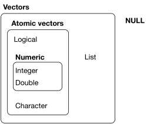

Data types refer to the types of information that can be stored as individual elements of objects. The primary data types for our purposes are numerics (double and integer), characters, and logicals. There are also two augmentations of these types: factors and dates.
The typeof() function can tell you the data type for a value or object.
typeof("hello")## [1] "character"a <- 7
typeof(a)## [1] "double"Run the following code then modify it to return the data type as logical.
typeof("TRUE")typeof(TRUE)There are two forms of numerical data in R: doubles and integers. Doubles refer to floating point numbers with decimals. Integers are positive and negative whole numbers (without decimals). Doubles can have a decimal of 0, which would make them equivalent to an integer. But R treats them as different data types even though they look the same.
# a is a double
a <- 7
a## [1] 7typeof(a)## [1] "double"# b is an integer
b <- 7L
b## [1] 7typeof(b)## [1] "integer"Character types are strings of … characters. You can put anything in a character string—including spaces and special characters—as long as they are in quotes (e.g., myname <- "Jeff Stévens!!").
Either single or double quotes can be used. In general, it is preferred to use double quotes. However, if you have a double quote inside your string, then use single quotes: mystring <- 'They said, "No way!"'. Alternatively, you can escape the internal double quotes with a \ to treat it as the actual character: mystring2 <- "We said, \"Way!\"".
Write that code that would assign the character string What do you mean by “fine”? to the object question without escaping the double quote.
question <- 'What do you mean by "fine"?'Sometimes we want to convert or ‘coerce’ an object from one data type to another. Often this occurs when numbers are stored as characters or factors and we want to do math on them (e.g., calculate a mean) or when dates or logical are stored as characters.
The base R functions for conversion are the as.*() family of functions: as.character(), as.numeric(), as.double(), as.integer(), as.logical(), as.factor(), as.Date().
For the most part, these are straightforward. But converting from a factor to a numeric is a little trickier. Because factors are augmented integers, they are stored as the level number rather than the level name. So first you need to coerce the level number to a character then coerce the character to a number.
myfactor <- factor("1", levels = c("0", "1"))
myfactor## [1] 1
## Levels: 0 1as.numeric(myfactor)## [1] 2as.character(myfactor)## [1] "1"as.numeric(as.character(myfactor))## [1] 1myfac <- factor(2, levels = c("1", "2", "3"))myfac <- factor(2, levels = c("1", "2", "3"))
as.numeric(as.character(myfac))Data types refer to individual elements of information. Those elements combine into different data structures. Technically, all elements of information (even individual ones) in R are vectors, and there are different forms of vectors.

Atomic vectors are homogeneous meaning that they contain a single data type. Lists are heterogenous meaning that they can contain multiple data types. We will refer to one dimensional atomic vectors as vectors and two dimensional atomic vectors as matrices. In terms of lists, we will primarily work with data frames or rectangular lists. Tibbles are special forms of data frames.
Vectors can include numeric, character, or logical data, but they can only contain a single data type. The simplest way to create a vector is by using the c() function.
stooges that includes the words Larry, Curly, and Moe in that order.
stooges <- c("Larry", "Curly", "Moe")Combine the vectors weekdays and weekend to create a new vector called week that starts with Monday.
weekdays <- c("Monday", "Tuesday", "Wednesday", "Thursday", "Friday")
weekend <- c("Saturday", "Sunday")weekdays <- c("Monday", "Tuesday", "Wednesday", "Thursday", "Friday")
weekend <- c("Saturday", "Sunday")
week <- c(weekdays, weekend)We can create sequences of numbers with seq() or :. To get quartiles, run seq(from = 0, to = 100, by = 25). To get 1, 2, 3, run 1:3. Give these examples a try.
seq(from = 0, to = 1, by = 0.05)seq() (include all argument names) then using :.
seq()
:seq(from = 10, to = 0, by = -1)
10:0Sometimes, you need to create a repetition of values, e.g., when creating a column of experimental conditions. You can use the rep() function to either repeat single values or vectors of values. Vectors can be repeated either as a whole vector (times argument) or each element of the vector can be repeated (each argument).
conditions <- c("Control", "Treatment A", "Treatment B")
rep(conditions, times = 3)## [1] "Control" "Treatment A" "Treatment B" "Control" "Treatment A"
## [6] "Treatment B" "Control" "Treatment A" "Treatment B"rep(conditions, each = 3)## [1] "Control" "Control" "Control" "Treatment A" "Treatment A"
## [6] "Treatment A" "Treatment B" "Treatment B" "Treatment B"myvector 10 times.
myvector <- 1:5myvector <- 1:5
rep(myvector, times = 10)myvector 10 times.
myvector <- 1:5myvector <- 1:5
rep(myvector, each = 10)We can use length() to find the length of a vector and dim() to get the dimensions of a matrix or data frame. We can also use nrow() and ncol() to get the number of rows and columns (respectively) for matrices and data frames.
Extracting subsets of vectors, matrices, or data frames involves using []. For matrices and data frames, the first number represents the row and the second represents the column. For instance, mydf[2, 7] extracts the value from the second row and the seventh column. To extract vectors or matrices, use sequences or vectors to subset multiple rows and/or columns: mydf[1:2, c(3, 4, 7)]. Leave the row or column empty to select the entire row or column: mydf[, 2].
Here, we create a data frame.
mydf <- data.frame(matrix(1:25, ncol = 5))
names(mydf) <- letters[1:5]
mydfCongrats—you’re on your way to becoming an R Markdown guru!